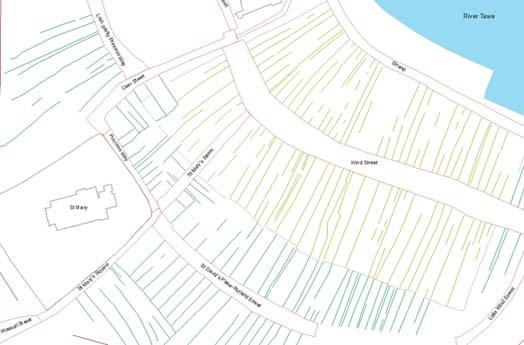
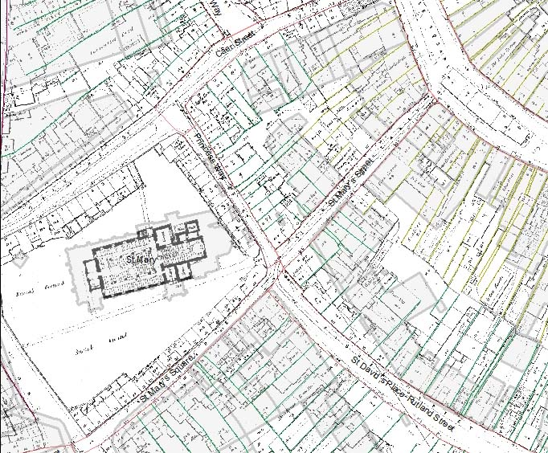
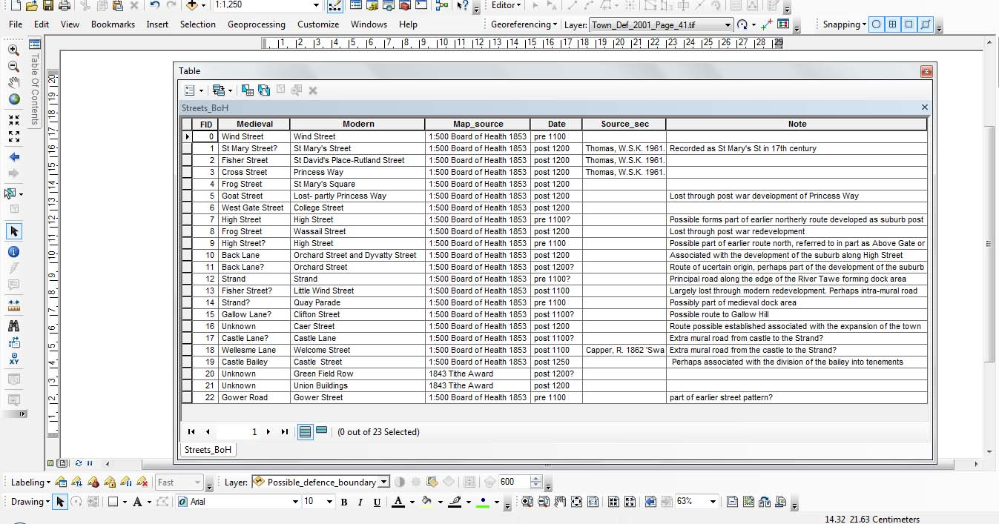

Blog
More than a map........

Maps have always been more than an image, they have meaning and information within them through text either as annotations, place names and symbols; we learn to read these messages in maps and interpret them. Creating a map of Swansea c.1300 for the project in GIS (see earlier posts) is no different. The map needs symbols and text to make it understandable, not only by other members of the project team, but also future users of the map. Within GIS, much of the information that helps understand the map is hidden due to the way the software creates a map. For example, to create the first image in this blog, there has been a lot of work looking at old maps, archaeology and documentary sources. The first step is to ide.jpgy old maps which have to be digitised (scanned into a computer) and added to the GIS. These maps then have to be overlain with modern Ordnance Survey mapping to allow the changes to the streets and buildings to be ide.jpgied which can begin to reveal the earlier story of the towns development. This helps begin to build up an historic base map onto which further maps, archaeological and documentary sources can be added. Part of the process of overlying old and modern maps is shown here with part of the Board of Health maps (1853) in relation to the modern Ordnance Survey (grey shaded building) in the area of St Mary's church. Notice how much this area has changed (but also areas that have remained the same).

The next stage is to 'trace' within the GIS over the features that are required on the historic map to begin the process of creating the digital map of Swansea in c.1300. This is done by creating differnt polygons (a closed feature like a circle) or lines (see the first image in this post). These polygons and lines in themselves have no data attached to them, either text or symbols to aid the understanding of what they mean. This is where the data is hidden because each polygon and line has an associated attribute table which is not automatically shown on a map. This table (see below) allows lots of data to be added to the map to help explain what is being shown, and the GIS allows elements of this data to be added to the map as text. The polygons and line in the GIS can also be coded with different styles (such as dashes or colour) to further help people understand the map. The final map produced for the project will therefore be much more than an image, it will have a set of data attached to it that will help aid its understanding and interpretation.

Şħȧřḗ ǿƞ Ŧẇīŧŧḗř Şħȧřḗ ǿƞ Ƒȧƈḗƀǿǿķ